Premise
How will a neural network designed to do simple word prediction perform when trained on sentences collected from online forums? If we choose sources dedicated to a niche topic (Ex: a specific video game), how will the model handle topic-specific words (Ex: character and spell names) and slang? Is the 'noise' from casual English (slang, misspellings, mixed grammar, etc.) significant enough to discount using this type of data for learning exercises?
Model
The neural network was taken from a course assignment for neural networks at University of Toronto, taught by Geoffrey Hinton at the time I took it (The most recent iteration of the course can be found here).
"It receives as input 3 consecutive words, and its aim is to predict a distribution over the next word (the target word). We train the model using the cross-entropy criterion, which is equivalent to maximizing the probability it assigns to the targets in the training set. Hopefully it will also learn to make sensible predictions for sequences it hasn’t seen before."
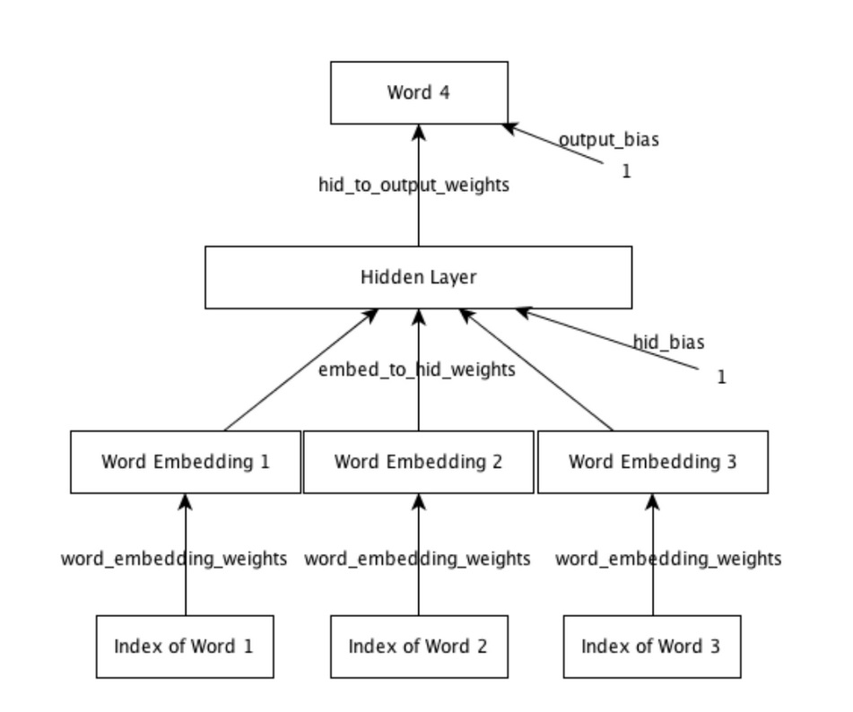{kind=link}
Gathering Data
The sources chosen for data were two active forums for discussion on the popular multiplayer game
'DoTA2':
reddit.com/r/dota2 and
nadota.com.
The python framework 'Scrapy' was used to scrape individual comments and posts from both sites. For both sites, the scraper gathered all comments from as many threads as possible. For nadota, the entire 'dota chat' forum was scraped (about 500 pages of content). Reddit has significantly more content, so after close to 3 days of scraping, a little under 2 years of content was pulled (over 10 million individual comments). This could've gone a little faster if I didn't limit the speed of the scraper so as not to hammer the websites' servers, but 2 years is plenty.
Sanitizing
The problem with forum posts is that grammar and punctuation are not enforced (and rarely even encouraged), and anything can be in the data collected from one word comments to giant ascii art masterpieces. To minimize noise, the scraped data was sanitized to look as "sentencey" as possible. Special characters and keyboard spam were thrown out, excessive punctuation was shortened to 1 character, periods were appended to sentences that didn't have them, etc. Rather than manipulating the data in a major way, only small quality of life changes were applied, since the goal is to see how easy it is to learn without strictly perfect training data.
After sanitizing, each comment was split up into individual sentence, and then again into trigrams (sets of 3 words), to feed as input to our model. The order of the trigrams were randomized to avoid bias in training. To get the data down to a working set with a reasonably sized vocabulary, any sentence that contained a word not appearing more than a set threshold were thrown out.
You can look through the code in sanitize.py to see more details.
I'll omit the raw data due to their size, but here's a preview of what it would look like before being split into
trigrams and serialized:
It 's been a pub thing for a long time . I have done this , a lot . Glad Im not the only one . I have done this a lot too you are not alone . I must ask , which match was this ? By spamming meepo .
Thankyou to ch0p of nadota for permission to scrape.
Results
NADota
Total comments scraped: ~490,000
Word occurrence threshold: 500
Total vocabulary size: 946
Total training inputs: 169,900 (50%)
Total validation and training set sizes: 84,900 (25%, 25%)
Training settings: Embedding dimension 16, hidden units 128.
Because this dataset was fairly small compared to reddit, it serves mainly as a proof of concept to have confidence in moving onto the much larger dataset.
One way to judge the performance is to give the model an input and look at how reasonable the outputs are. When we give the model an input and continue to take the highest probability output. Although it has no context of anything before the current input, we still generate sentences that look believable:
"I think that" -> " 's a good player." "You are definitely" -> "the best." "He plays a" -> "game." "Why does nadota" -> "play dota two./?" "Do you even" -> "know what he did./?" "You should pick" -> "me." "I like when" -> "I m not sure if it was a good player."
To get a more intuitive sense of how our model is learning, we can look at a 2-dimensional plot of the distributed representation space made using an algorithm called t-SNE. The algorithm attempts to map points that are close together in the 16-dimensional space as close together in 2 dimensions. You can read about how t-SNE works here.
The full plot is below.
(Note: vocabulary includes explicit language.)
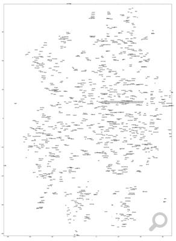
-tsne.png){kind=link}
We can see some examples that our model has learned grammatical and semantic features.
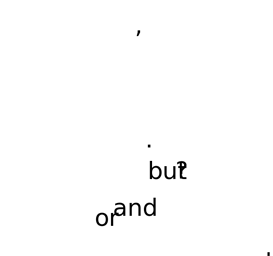Here we see the embedding closely groups words that have semantic differences, but are grammatically similar in their use to separate independent clauses.

Evidence learning is able to associate alternate spellings and slang with their root word.
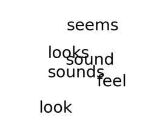A cluster of semantically related words.
So we have a pretty good evidence that the training data doesn't need to be perfect English. Next we look at the results of the much larger data set.
Total comments scraped: ~10 million
Word occurrence threshold: 4000
Total vocabulary size: 1,780
Total training inputs: 8,371,400 (80%)
Total validation and training set sizes: 1,046,400 (10%,10%)
Training settings: Embedding dimension 16, hidden units 128.
This data set is much much larger, so hopefully we'll see interesting results.
Giving the model an input it's never seen before gives pretty reasonable output:
>>> model.predict_next_word('correctly','learning','to')
correctly learning to do Prob: 0.06963
correctly learning to play Prob: 0.05980
correctly learning to be Prob: 0.05595
correctly learning to get Prob: 0.03048
correctly learning to see Prob: 0.02387
correctly learning to go Prob: 0.02322
correctly learning to watch Prob: 0.02066
correctly learning to win Prob: 0.01970
correctly learning to pick Prob: 0.01947
correctly learning to make Prob: 0.01940
Not only does the model correctly predict a verb, which makes the most grammatical sense, but it's top
choices all work pretty well for the context of learning.
What can we learn from looking at the t-SNE plot?
(Full plot below.)
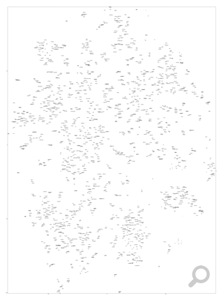{kind=link}
Again we can see good examples of the model closely relating grammatically and semantically similar words:
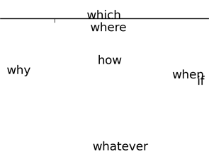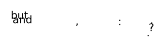
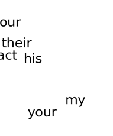
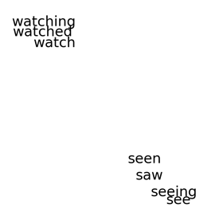
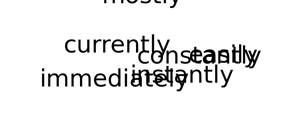
The last one is pretty interesting when you notice the model clusters adverbs together, as well as clustering those adverbs that are similar in meaning - the ones pictured all having some relation to time.
What about words that are specific to the topic of the forum (DoTA2)?
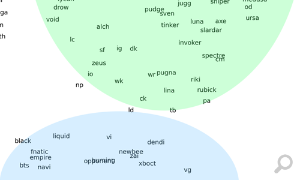{kind=link}
Above we can see that the model has one area that contains many pronouns specific to DoTA2, notably with two distinct clusters separating hero (game character) names from real player and organization names.
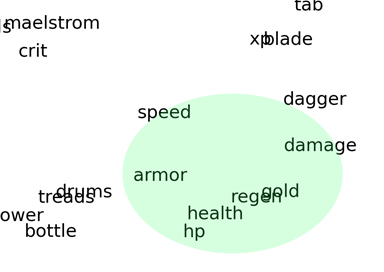In another area we see a cluster of words that all relate to attributes specific to the context of the game.
(Ex:
Speed: how fast your character or a spell moves.
Armor: a statistic that is used in calculating resistance against physical damage.
Regen: short form for regeneration, an attribute that makes a character regenerate health.)
This gives us some insight that the model is able to adapt quite well to the context of the training data, including unique vocabularies and word meanings specific to a vernacular or community.
What does this mean? Using data found online can be a reasonable method of developing a learning model for a specific context. Insights can be made about the way language evolves and morphs between different communities in a really interesting way. What's most exciting is that we've shown it is possible to learn from imperfectly formed data (spelling mistakes, spam, etc.), and still come up with a model that has a reasonable grasp on grammar, all without manually digging through the data to clean it up.